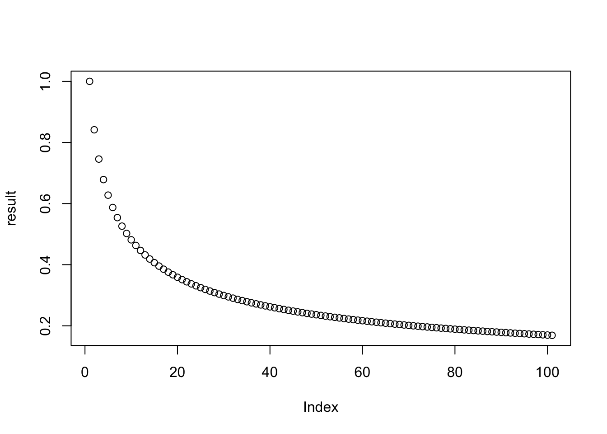

3 Best Practices for Writing R Scripts
Learning Objectives
- Identify and explain the difference between R’s various printing functions
- Describe and use R’s for, while, and repeat loops
- Identify the most appropriate iteration strategy for a given problem
- Explain strategies to organize iterative code
3.2 Printing Output
This section introduces several different functions for printing output and making that output easier to read.
3.2.1 The print Function
The print function prints a string representation of an object to the
console. The string representation is usually formatted in a way that exposes
details important to programmers rather than users.
For example, when printing a vector, the function prints the position of the
first element on each line in square brackets [ ]:
## [1] 1 2 3 4 5 6 7 8 9 10 11 12 13 14 15 16 17 18
## [19] 19 20 21 22 23 24 25 26 27 28 29 30 31 32 33 34 35 36
## [37] 37 38 39 40 41 42 43 44 45 46 47 48 49 50 51 52 53 54
## [55] 55 56 57 58 59 60 61 62 63 64 65 66 67 68 69 70 71 72
## [73] 73 74 75 76 77 78 79 80 81 82 83 84 85 86 87 88 89 90
## [91] 91 92 93 94 95 96 97 98 99 100The print function also prints quotes around strings:
## [1] "Hi"These features make the print function ideal for printing information when
you’re trying to understand some code or diagnose a bug. On the other hand,
these features also make print a bad choice for printing output or status
messages for users (including you).
R calls the print function automatically anytime a result is returned at the
prompt. Thus it’s not necessary to call print to print something when you’re
working directly in the console—only from within loops, functions, scripts,
and other code that runs non-interactively.
The print function is an S3 generic (see Section 6.4), so you if you
create an S3 class, you can define a custom print method for it. For S4
objects, R uses the S4 generic show instead of print.
3.2.2 The message Function
To print output for users, the message function is the one you should use.
The main reason for this is that the message function is part of R’s
conditions system for reporting status information as code runs. This makes
it easier for other code to detect, record, respond to, or suppress the output
(see Section 4.2 to learn more about R’s conditions
system).
The message function prints its argument(s) and a newline to the console:
## Hello world!If an argument isn’t a string, the function automatically and silently attempts to coerce it to one:
## 4Some types of objects can’t be coerced to a string:
## Error in FUN(X[[i]], ...): cannot coerce type 'builtin' to vector of type 'character'For objects with multiple elements, the function pastes together the string representations of the elements with no separators in between:
## 123Similarly, if you pass the message function multiple arguments, it pastes
them together with no separators:
## Hi, my name is R and x is 123This is a convenient way to print names or descriptions alongside values from
your code without having to call a formatting function like paste.
You can make the message function print something without adding a newline at
the end by setting the argument appendLF = FALSE. The difference can be easy
to miss unless you make several calls to message, so the say_hello function
in this example calls message twice:
say_hello = function(appendLF) {
message("Hello", appendLF = appendLF)
message(" world!")
}
say_hello(appendLF = TRUE)## Hello## world!## Hello world!Note that RStudio always adds a newline in front of the prompt, so making an
isolated call to message with appendLF = FALSE appears to produce the same
output as with appendLF = TRUE. This is an example of a situation where
RStudio leads you astray: in an ordinary R console, the two are clearly
different.
3.2.3 The cat Function
The cat function, whose name stands for “concatenate and print,” is a
low-level way to print output to the console or a file. The message function
prints output by calling cat, but cat is not part of R’s conditions system.
The cat function prints its argument(s) to the console. It does not add a
newline at the end:
## HelloAs with message, RStudio hides the fact that there’s no newline if you make
an isolated call to cat.
The cat function coerces its arguments to strings and concatenates them. By
default, a space is inserted between arguments and their elements:
## 4## 1 2 3## Hello NickYou can set the sep parameter to control the separator cat inserts:
## Hello|world|1|2|3If you want to write output to a file rather than to the console, you can call
cat with the file parameter set. However, it’s preferable to use functions
tailored to writing specific kinds of data, such as writeLines (for text) or
write.table (for tabular data), since they provide additional options to
control the output.
Many scripts and packages still use cat to print output, but the message
function provides more flexibility and control to people running the code. Thus
it’s generally preferable to use message in new code. Nevertheless, there are
a few specific cases where cat is useful—for example, if you want to pipe
data to a UNIX shell command. See ?cat for details.
3.2.4 Formatting Output
R provides a variety of ways to format data before you print it. Taking the time to format output carefully makes it easier to read and understand, as well as making your scripts seem more professional.
3.2.4.1 Escape Sequences
One way to format strings is by adding (or removing) escape sequences. An escape sequence is a sequence of characters that represents some other character, usually one that’s invisible (such as whitespace) or doesn’t appear on a standard keyboard.
In R, escape sequences always begin with a backslash. For example, \n is a
newline. The message and cat functions automatically convert escape
sequences to the characters they represent:
## Hello
## world!The print function doesn’t convert escape sequences:
## [1] "Hello\nworld!"Some escape sequences trigger special behavior in the console. For example,
ending a line with a carriage return \r makes the console print the next line
over the line. Try running this code in a console (it’s not possible to see the
result in a static book):
# Run this in an R console.
for (i in 1:10) {
message(i, "\r", appendLF = FALSE)
# Wait 0.5 seconds.
Sys.sleep(0.5)
}You can find a complete list of escape sequences in ?Quotes.
3.2.4.2 Formatting Functions
You can use the sprintf function to apply specific formatting to values and
substitute them into strings. The function uses a mini-language to describe the
formatting and substitutions. The sprintf function (or something like it) is
available in many programming languages, so being familiar with it will serve
you well on your programming journey.
The key idea is that substitutions are marked by a percent sign % and a
character. The character indicates the kind of data to be substituted: s for
strings, i for integers, f for floating point numbers, and so on.
The first argument to sprintf must be a string, and subsequent arguments are
values to substitute into the string (from left to right). For example:
## [1] "My age is 32, and my name is Nick"You can use the mini-language to do things like specify how many digits to
print after a decimal point. Format settings for a substituted value go between
the percent sign % and the character. For instance, here’s how to print pi
with 2 digits after the decimal:
## [1] "3.14"You can learn more by reading ?sprintf.
Much simpler are the paste and paste0 functions, which coerce their
arguments to strings and concatenate (or “paste together”) them. The paste
function inserts a space between each argument, while the paste0
function doesn’t:
## [1] "Hello world"## [1] "Helloworld"You can control the character inserted between arguments with the sep
parameter.
By setting an argument for the collapse parameter, you can also use the
paste and paste0 functions to concatenate the elements of a vector. The
argument to collapse is inserted between the elements. For example, suppose
you want to paste together elements of a vector inserting a comma and space
, in between:
## [1] "1, 2, 3"Members of the R community have developed many packages to make formatting strings easier:
3.2.5 Logging Output
Logging means saving the output from some code to a file as the code runs. The file where the output is saved is called a log file or log, but this name isn’t indicative of a specific format (unlike, say, a “CSV file”).
It’s a good idea to set up some kind of logging for any code that takes more than a few minutes to run, because then if something goes wrong you can inspect the log to diagnose the problem. Think of any output that’s not logged as ephemeral: it could disappear if someone reboots the computer, or there’s a power outage, or some other, unforeseen event.
R’s built-in tools for logging are rudimentary, but members of the community have developed a variety of packages for logging. Here are a few that are still actively maintained as of January 2023:
- logger – a relatively new package that aims to improve aspects of other logging packages that R users find confusing.
- futile.logger – a popular, mature logging package based on Apache’s Log4j utility and on R idioms.
- logging – a mature logging package based on Python’s
loggingmodule. - loggit – integrates with R’s conditions system and writes logs in JavaScript Object Notation (JSON) format so they are easy to inspect programmatically.
- log4r – another package based on Log4j with an object-oriented programming approach.
3.5 Iteration Strategies
R is powerful tool for automating tasks that have repetitive steps. For example, you can:
- Apply a transformation to an entire column of data.
- Compute distances between all pairs from a set of points.
- Read a large collection of files from disk in order to combine and analyze the data they contain.
- Simulate how a system evolves over time from a specific set of starting parameters.
- Scrape data from many pages of a website.
You can implement concise, efficient solutions for these kinds of tasks in R by using iteration, which means repeating a computation many times. R provides four different strategies for writing iterative code:
- Vectorization, where a function is implicitly called on each element of a vector. See this section of the R Basics for more details.
- Apply functions, where a function is explicitly called on each element of a vector or array. See this section of the R Basics reader for more details.
- Loops, where an expression is evaluated repeatedly until some condition is met.
- Recursion, where a function calls itself.
Vectorization is the most efficient and most concise iteration strategy, but also the least flexible, because it only works with vectorized functions and vectors. Apply functions are more flexible—they work with any function and any data structure with elements—but less efficient and less concise. Loops and recursion provide the most flexibility but are the least concise. In recent versions of R, apply functions and loops are similar in terms of efficiency. Recursion tends to be the least efficient iteration strategy in R.
The rest of this section explains how to write loops and how to choose which iteration strategy to use. We assume you’re already comfortable with vectorization and have at least some familiarity with apply functions.
3.5.1 For-loops
A for-loop evaluates an expression once for each element of a vector or
list. The for keyword creates a for-loop. The syntax is:
The variable I is called an induction variable. At the beginning of each
iteration, I is assigned the next element of DATA. The loop iterates once
for each element, unless a keyword instructs R to exit the loop early (more
about this in Section 3.5.4). As with if-statements and functions,
the curly braces { } are only required if the body contains multiple lines of
code. Here’s a simple for-loop:
## Hi from iteration 1## Hi from iteration 2## Hi from iteration 3## Hi from iteration 4## Hi from iteration 5## Hi from iteration 6## Hi from iteration 7## Hi from iteration 8## Hi from iteration 9## Hi from iteration 10When some or all of the iterations in a task depend on results from prior iterations, loops tend to be the most appropriate iteration strategy. For instance, loops are a good way to implement time-based simulations or compute values in recursively defined sequences.
As a concrete example, suppose you want to compute the result of starting from the value 1 and composing the sine function 100 times:
## [1] 0.1688525Unlike other iteration strategies, loops don’t return a result automatically. It’s up to you to use variables to store any results you want to use later. If you want to save a result from every iteration, you can use a vector or a list indexed on the iteration number:
n = 1 + 100
result = numeric(n)
result[1] = 1
for (i in 2:n) {
result[i] = sin(result[i - 1])
}
plot(result)
Section 3.5.3 explains this in more detail.
If the iterations in a task are not dependent, it’s preferable to use vectorization or apply functions instead of a loop. Vectorization is more efficient, and apply functions are usually more concise.
In some cases, you can use vectorization to handle a task even if the
iterations are dependent. For example, you can use vectorized exponentiation
and the sum function to compute the sum of the cubes of many numbers:
## [1] 10019103.5.2 While-loops
A while-loop runs a block of code repeatedly as long as some condition is
TRUE. The while keyword creates a while-loop. The syntax is:
The CONDITION should be a scalar logical value or an expression that returns
one. At the beginning of each iteration, R checks the CONDITION and exits the
loop if it’s FALSE. As always, the curly braces { } are only required if
the body contains multiple lines of code. Here’s a simple while-loop:
## Hello from iteration 1## Hello from iteration 2## Hello from iteration 3## Hello from iteration 4## Hello from iteration 5## Hello from iteration 6## Hello from iteration 7## Hello from iteration 8## Hello from iteration 9## Hello from iteration 10Notice that this example does the same thing as the simple for-loop in Section 3.5.1, but requires 5 lines of code instead of 2. While-loops are a generalization of for-loops, and only do the bare minimum necessary to iterate. They tend to be most useful when you don’t know how many iterations will be necessary to complete a task.
As an example, suppose you want to add up the integers in order until the total is greater than 50:
total = 0
i = 1
while (total < 50) {
total = total + i
message("i is ", i, " total is ", total)
i = i + 1
}## i is 1 total is 1## i is 2 total is 3## i is 3 total is 6## i is 4 total is 10## i is 5 total is 15## i is 6 total is 21## i is 7 total is 28## i is 8 total is 36## i is 9 total is 45## i is 10 total is 55## [1] 55## [1] 113.5.3 Saving Multiple Results
Loops often produce a different result for each iteration. If you want to save more than one result, there are a few things you must do.
First, set up an index vector. The index vector should usually correspond to
the positions of the elements in the data you want to process. The seq_along
function returns an index vector when passed a vector or list. For instance:
The loop will iterate over the index rather than the input, so the induction variable will track the current iteration number. On the first iteration, the induction variable will be 1, on the second it will be 2, and so on. Then you can use the induction variable and indexing to get the input for each iteration.
Second, set up an empty output vector or list. This should usually also correspond to the input, or one element longer (the extra element comes from the initial value). R has several functions for creating vectors:
logical,integer,numeric,complex, andcharactercreate an empty vector with a specific type and lengthvectorcreates an empty vector with a specific type and lengthrepcreates a vector by repeating elements of some other vector
Empty vectors are filled with FALSE, 0, or "", depending on the type of
the vector. Here are some examples:
## [1] FALSE FALSE FALSE## [1] 0 0 0 0## [1] 1 2 1 2Let’s create an empty numeric vector congruent to the numbers vector:
As with the input, you can use the induction variable and indexing to set the output for each iteration.
Creating a vector or list in advance to store something, as we’ve just done, is
called preallocation. Preallocation is extremely important for efficiency
in loops. Avoid the temptation to use c or append to build up the output
bit by bit in each iteration.
Finally, write the loop, making sure to get the input and set the output. As an
example, this loop adds each element of numbers to a running total and
squares the new running total:
for (i in index) {
prev = if (i > 1) result[i - 1] else 0
result[i] = (numbers[i] + prev)^2
}
result## [1] 1.000000e+00 4.840000e+02 2.371690e+05 5.624534e+10 3.163538e+213.5.4 Break & Next
The break keyword causes a loop to immediately exit. It only makes sense to
use break inside of an if-statement.
For example, suppose you want to print each string in a vector, but stop at the
first missing value. You can do this with a for-loop and the break keyword:
my_messages = c("Hi", "Hello", NA, "Goodbye")
for (msg in my_messages) {
if (is.na(msg))
break
message(msg)
}## Hi## HelloThe next keyword causes a loop to immediately go to the next iteration. As
with break, it only makes sense to use next inside of an if-statement.
Let’s modify the previous example so that missing values are skipped, but don’t cause printing to stop. Here’s the code:
## Hi## Hello## GoodbyeThese keywords work with both for-loops and while-loops.
3.5.5 Planning for Iteration
At first it may seem difficult to decide if and what kind of iteration to use. Start by thinking about whether you need to do something over and over. If you don’t, then you probably don’t need to use iteration. If you do, then try iteration strategies in this order:
- Vectorization
- Apply functions
- Try an apply function if iterations are independent.
- Loops
- Try a for-loop if some iterations depend on others.
- Try a while-loop if the number of iterations is unknown.
- Recursion (which isn’t covered here)
- Convenient for naturally recursive problems (like Fibonacci), but often there are faster solutions.
Start by writing the code for just one iteration. Make sure that code works; it’s easy to test code for one iteration.
When you have one iteration working, then try using the code with an iteration
strategy (you will have to make some small changes). If it doesn’t work, try to
figure out which iteration is causing the problem. One way to do this is to use
message to print out information. Then try to write the code for the broken
iteration, get that iteration working, and repeat this whole process.
3.5.6 Case Study: The Collatz Conjecture
The Collatz Conjecture is a conjecture in math that was introduced in 1937 by Lothar Collatz and remains unproven today, despite being relatively easy to explain. Here’s a statement of the conjecture:
Start from any positive integer. If the integer is even, divide by 2. If the integer is odd, multiply by 3 and add 1.
If the result is not 1, repeat using the result as the new starting value.
The result will always reach 1 eventually, regardless of the starting value.
The sequences of numbers this process generates are called Collatz
sequences. For instance, the Collatz sequence starting from 2 is 2, 1. The
Collatz sequence starting from 12 is 12, 6, 3, 10, 5, 16, 8, 4, 2, 1.
You can use iteration to compute the Collatz sequence for a given starting value. Since each number in the sequence depends on the previous one, and since the length of the sequence varies, a while-loop is the most appropriate iteration strategy:
n = 5
i = 0
while (n != 1) {
i = i + 1
if (n %% 2 == 0) {
n = n / 2
} else {
n = 3 * n + 1
}
message(n, " ", appendLF = FALSE)
}## 16 8 4 2 1As of 2020, scientists have used computers to check the Collatz sequences for every number up to approximately \(2^{64}\). For more details about the Collatz Conjecture, check out this video.
3.5.7 Case Study: U.S. Fruit Prices
The U.S. Department of Agriculture (USDA) Economic Research Service (ERS) publishes data about consumer food prices. For instance, in 2018 they posted a dataset that estimates average retail prices for various fruits, vegetables, and snack foods. The estimates are formatted as a collection of Excel files, one for each type of fruit or vegetable. In this case study, you’ll use iteration to get the estimated “fresh” price for all of the fruits in the dataset that are sold fresh.
To get started, download the zipped collection of fruit
spreadsheets and save it somewhere on your computer. Then unzip the
file with a zip program or R’s own unzip function.
The first sheet of each file contains a table with the name of the fruit and prices sorted by how the fruit was prepared. You can see this for yourself if you use a spreadsheet program to inspect some of the files.
In order to read the files into R, first get a vector of their names. You can
use the list.files function to list all of the files in a directory. If you
set full.names = TRUE, the function will return the absolute path to each
file:
## [1] "data/fruit/apples_2013.xlsx" "data/fruit/apricots_2013.xlsx"
## [3] "data/fruit/bananas_2013.xlsx" "data/fruit/berries_mixed_2013.xlsx"
## [5] "data/fruit/blackberries_2013.xlsx" "data/fruit/blueberries_2013.xlsx"
## [7] "data/fruit/cantaloupe_2013.xlsx" "data/fruit/cherries_2013.xlsx"
## [9] "data/fruit/cranberries_2013.xlsx" "data/fruit/dates_2013.xlsx"
## [11] "data/fruit/figs_2013.xlsx" "data/fruit/fruit_cocktail_2013.xlsx"
## [13] "data/fruit/grapefruit_2013.xlsx" "data/fruit/grapes_2013.xlsx"
## [15] "data/fruit/honeydew_2013.xlsx" "data/fruit/kiwi_2013.xlsx"
## [17] "data/fruit/mangoes_2013.xlsx" "data/fruit/nectarines_2013.xlsx"
## [19] "data/fruit/oranges_2013.xlsx" "data/fruit/papaya_2013.xlsx"
## [21] "data/fruit/peaches_2013.xlsx" "data/fruit/pears_2013.xlsx"
## [23] "data/fruit/pineapple_2013.xlsx" "data/fruit/plums_2013.xlsx"
## [25] "data/fruit/pomegranate_2013.xlsx" "data/fruit/raspberries_2013.xlsx"
## [27] "data/fruit/strawberries_2013.xlsx" "data/fruit/tangerines_2013.xlsx"
## [29] "data/fruit/watermelon_2013.xlsx"The files are in Excel format, which you can read with the read_excel
function from the readxl package. First try reading one file and extracting
the fresh price:
## New names:
## • `` -> `...2`
## • `` -> `...3`
## • `` -> `...4`
## • `` -> `...5`
## • `` -> `...6`
## • `` -> `...7`The name of the fruit is the first word in the first column’s name. The fresh
price appears in the row where the word in column 1 starts with "Fresh". You
can use str_which from the stringr package (Section
1.4.1) to find and extract this row:
## # A tibble: 1 × 7
## Apples—Average retail price per pound or…¹ ...2 ...3 ...4 ...5 ...6 ...7
## <chr> <chr> <chr> <chr> <chr> <chr> <chr>
## 1 Fresh1 1.56… per … 0.9 0.24… poun… 0.42…
## # ℹ abbreviated name:
## # ¹`Apples—Average retail price per pound or pint and per cup equivalent, 2013`The price and unit appear in column 2 and column 3.
Now generalize these steps by making a read_fresh_price function. The
function should accept a path as input and return a vector that contains the
fruit name, fresh price, and unit. Don’t worry about cleaning up the fruit name
at this point—you can do that with a vectorized operation after combining the
data from all of the files. A few fruits don’t have a fresh price, and the
function should return NA for the price and unit for those. Here’s one way to
implement the read_fresh_price function:
read_fresh_price = function(path) {
prices = read_excel(path)
# Get fruit name.
fruit = names(prices)[[1]]
# Find fresh price.
idx = str_which(prices[[1]], "^Fresh")
if (length(idx) > 0) {
prices = prices[idx, ]
c(fruit, prices[[2]], prices[[3]])
} else {
c(fruit, NA, NA)
}
}Test that the function returns the correct result for a few of the files:
## New names:
## • `` -> `...2`
## • `` -> `...3`
## • `` -> `...4`
## • `` -> `...5`
## • `` -> `...6`
## • `` -> `...7`## [1] "Apples—Average retail price per pound or pint and per cup equivalent, 2013"
## [2] "1.5675153914496354"
## [3] "per pound"## New names:
## • `` -> `...2`
## • `` -> `...3`
## • `` -> `...4`
## • `` -> `...5`
## • `` -> `...6`
## • `` -> `...7`## [1] "Mixed berries—Average retail price per pound and per cup equivalent, 2013"
## [2] NA
## [3] NA## New names:
## • `` -> `...2`
## • `` -> `...3`
## • `` -> `...4`
## • `` -> `...5`
## • `` -> `...6`
## • `` -> `...7`## [1] "Cherries—Average retail price per pound and per cup equivalent, 2013"
## [2] "3.5929897554945156"
## [3] "per pound"Now that the function is working, it’s time to choose an iteration strategy.
The read_fresh_price function is not vectorized, so that strategy isn’t
possible. Reading one file doesn’t depend on reading any of the others, so
apply functions are the best strategy here. The read_fresh_price function
always returns a character vector with 3 elements, so you can use sapply to
process all of the files and get a matrix of results:
## New names:
## New names:
## New names:
## New names:
## New names:
## New names:
## New names:
## New names:
## New names:
## New names:
## New names:
## New names:
## New names:
## New names:
## New names:
## New names:
## New names:
## New names:
## New names:
## New names:
## New names:
## New names:
## New names:
## New names:
## New names:
## New names:
## New names:
## New names:
## New names:
## • `` -> `...2`
## • `` -> `...3`
## • `` -> `...4`
## • `` -> `...5`
## • `` -> `...6`
## • `` -> `...7`# Transpose, convert to a data frame, and set names for easy reading.
all_prices = t(all_prices)
all_prices = data.frame(all_prices)
rownames(all_prices) = NULL
colnames(all_prices) = c("fruit", "price", "unit")
all_prices## fruit
## 1 Apples—Average retail price per pound or pint and per cup equivalent, 2013
## 2 Apricots—Average retail price per pound and per cup equivalent, 2013
## 3 Bananas—Average retail price per pound and per cup equivalent, 2013
## 4 Mixed berries—Average retail price per pound and per cup equivalent, 2013
## 5 Blackberries—Average retail price per pound and per cup equivalent, 2013
## 6 Blueberries—Average retail price per pound and per cup equivalent, 2013
## 7 Cantaloupe—Average retail price per pound and per cup equivalent, 2013
## 8 Cherries—Average retail price per pound and per cup equivalent, 2013
## 9 Cranberries—Average retail price per pound and per cup equivalent, 2013
## 10 Dates—Average retail price per pound and per cup equivalent, 2013
## 11 Figs—Average retail price per pound and per cup equivalent, 2013
## 12 Fruit cocktail—Average retail price per pound and per cup equivalent, 2013
## 13 Grapefruit—Average retail price per pound or pint and per cup equivalent, 2013
## 14 Grapes—Average retail price per pound or pint and per cup equivalent, 2013
## 15 Honeydew melon—Average retail price per pound and per cup equivalent, 2013
## 16 Kiwi—Average retail price per pound and per cup equivalent, 2013
## 17 Mangoes—Average retail price per pound and per cup equivalent, 2013
## 18 Nectarines—Average retail price per pound and per cup equivalent, 2013
## 19 Oranges—Average retail price per pound or pint and per cup equivalent, 2013
## 20 Papaya—Average retail price per pound and per cup equivalent, 2013
## 21 Peaches—Average retail price per pound and per cup equivalent, 2013
## 22 Pears—Average retail price per pound and per cup equivalent, 2013
## 23 Pineapple—Average retail price per pound or pint and per cup equivalent, 2013
## 24 Plums—Average retail price per pound or pint and per cup equivalent, 2013
## 25 Pomegranate—Average retail price per pound or pint and per cup equivalent, 2013
## 26 Raspberries—Average retail price per pound and per cup equivalent, 2013
## 27 Strawberries—Average retail price per pound and per cup equivalent, 2013
## 28 Tangerines—Average retail price per pound or pint and per cup equivalent, 2013
## 29 Watermelon—Average retail price per pound and per cup equivalent, 2013
## price unit
## 1 1.5675153914496354 per pound
## 2 3.0400719670964378 per pound
## 3 0.56698341453144807 per pound
## 4 <NA> <NA>
## 5 5.7747082503535152 per pound
## 6 4.7346216897250253 per pound
## 7 0.53587377610644515 per pound
## 8 3.5929897554945156 per pound
## 9 <NA> <NA>
## 10 <NA> <NA>
## 11 <NA> <NA>
## 12 <NA> <NA>
## 13 0.89780204117954143 per pound
## 14 2.0938274120049827 per pound
## 15 0.79665620543008364 per pound
## 16 2.0446834079658482 per pound
## 17 1.3775634470319702 per pound
## 18 1.7611484827950696 per pound
## 19 1.0351727302444853 per pound
## 20 1.2980115892049107 per pound
## 21 1.5911868532458617 per pound
## 22 1.4615746043999458 per pound
## 23 0.62766194593569868 per pound
## 24 1.8274160078099031 per pound
## 25 2.1735904118559191 per pound
## 26 6.9758107988552958 per pound
## 27 2.3588084831103004 per pound
## 28 1.3779618772323634 per pound
## 29 0.33341203532340097 per poundFinally, the last step is to remove the extra text from the fruit name. One way
to do this is with the str_split_fixed function from the stringr package.
There’s an en dash — after each fruit name, which you can use for the split:
## fruit price unit
## 1 Apples 1.5675153914496354 per pound
## 2 Apricots 3.0400719670964378 per pound
## 3 Bananas 0.56698341453144807 per pound
## 4 Mixed berries <NA> <NA>
## 5 Blackberries 5.7747082503535152 per pound
## 6 Blueberries 4.7346216897250253 per pound
## 7 Cantaloupe 0.53587377610644515 per pound
## 8 Cherries 3.5929897554945156 per pound
## 9 Cranberries <NA> <NA>
## 10 Dates <NA> <NA>
## 11 Figs <NA> <NA>
## 12 Fruit cocktail <NA> <NA>
## 13 Grapefruit 0.89780204117954143 per pound
## 14 Grapes 2.0938274120049827 per pound
## 15 Honeydew melon 0.79665620543008364 per pound
## 16 Kiwi 2.0446834079658482 per pound
## 17 Mangoes 1.3775634470319702 per pound
## 18 Nectarines 1.7611484827950696 per pound
## 19 Oranges 1.0351727302444853 per pound
## 20 Papaya 1.2980115892049107 per pound
## 21 Peaches 1.5911868532458617 per pound
## 22 Pears 1.4615746043999458 per pound
## 23 Pineapple 0.62766194593569868 per pound
## 24 Plums 1.8274160078099031 per pound
## 25 Pomegranate 2.1735904118559191 per pound
## 26 Raspberries 6.9758107988552958 per pound
## 27 Strawberries 2.3588084831103004 per pound
## 28 Tangerines 1.3779618772323634 per pound
## 29 Watermelon 0.33341203532340097 per poundNow the data are ready for analysis. You could extend the reader function to extract more of the data (e.g., dried and frozen prices), but the overall process is fundamentally the same. Write the code to handle one file (one step), generalize it to work on several, and then iterate.
For another example, see Liza Wood’s Real-world Function Writing Mini-reader.